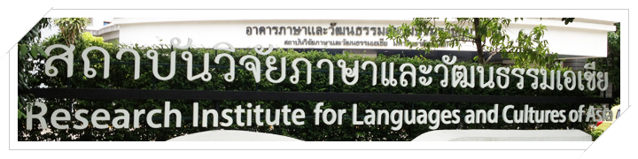

Museum Information

Queen Sirikit has been stated from the above confer to Professor. Khunying Suriya Ratanakul for 40 years ago. She stated to Khunying Suriya about trying to understand and learn about Miao people life. Professor Khunying Suriya Ratanakul proceeds to established Research Institute of Languages and Cultures for rural people improvement. Now they changed the name into Research Institute for Languages and Cultures of Asia. This preamble is the first learning chapter to Research Institute for Languages and Cultures of Asia in Philosophy as "Languages and Cultures are the core of the development" On the purpose of excellence in research about Languages and Cultures for the development and develop the quality of learning and academic administration in order to respond the people need. It leads more to the cultural integrity development.

Museum 4.0
Conversation is collection
Museum 4.0 is not only on site. But it is a wide place for learning by yourself. Sometimes it may be the place on online media and on mobile. In the society, they connected by IoT-Internet of things. Museum 4.0 is giving an opportunity to people for designing the contents. Also, the museum exhibitions and new things. From our self-curate, It can exchange the invention of learning by changing the transfer knowledge method into the transform learning method. It is an open place for the conversation between museum and audience. Also, In the groups of audience, the museum has an important duty for their learning and enjoyable and the museum can be their software that doesn’t need to communicate to the place that not be fixed but it can create the conversations like on-site, online, on mobile and off-line. From the reason from the above, Conversation is an important conversation.